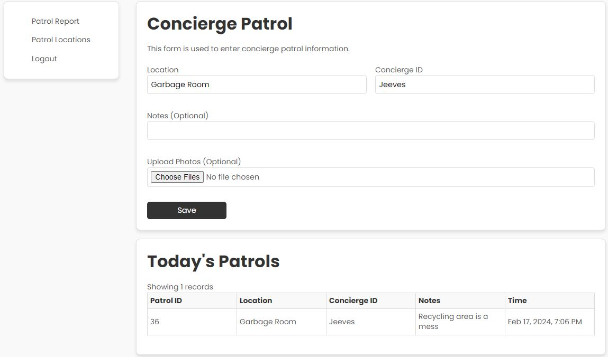

Building Report Management
This app enables building security to track patrol and enter information and attach photos to ensure patrol data is logged
NFC tagging
Building security can simply use their own phones to scan NFC tags throughout the property to enter patrol information. No propriety app installation required
Patrol History and Reporting
Concierge and Building Managers can review patrol history.